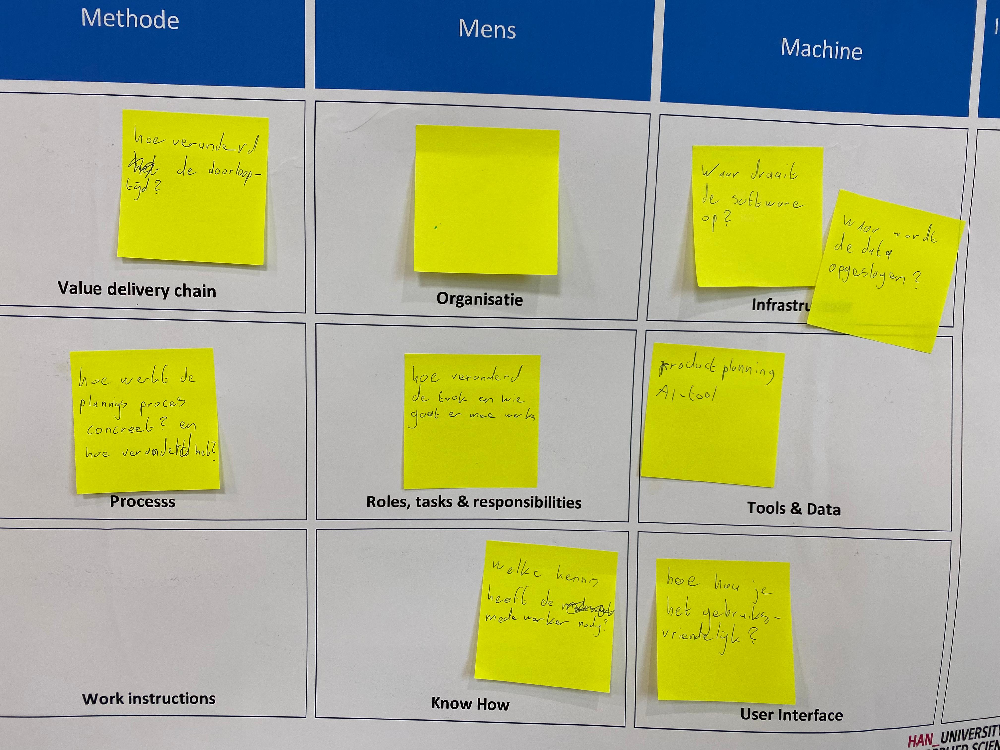
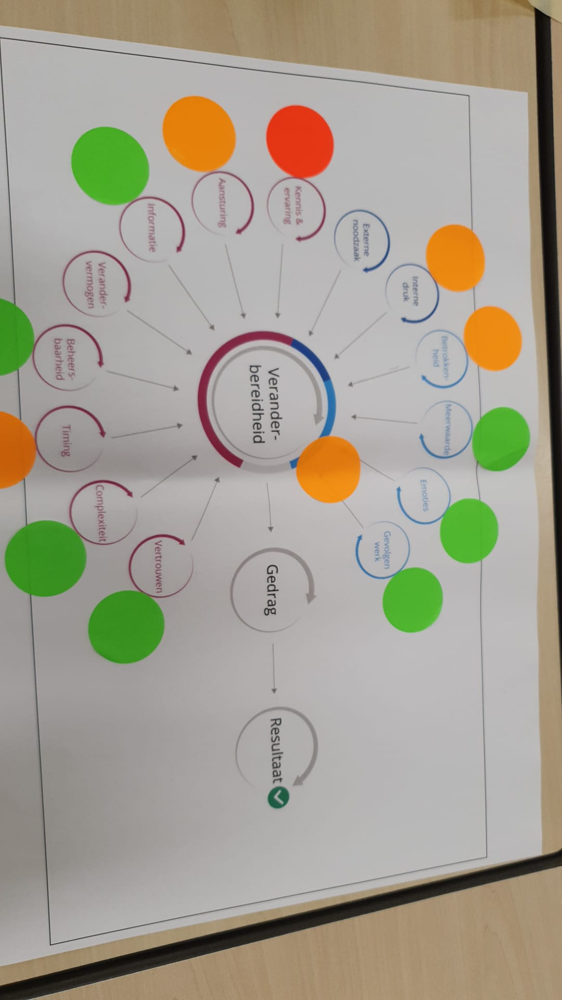

Deze workshop is gegeven door Maarten van Gils. Tijdens deze workshop heb ik geleerd dat innovatie niet alleen iets is van de afgelopen 5 jaar, maar bedrijven zijn hier al decennia mee bezig. Dit heeft mij meer perspectief gegeven over wat innovatie precies inhoudt. Daarnaast heb ik ook een manier geleerd om een innovatie beter te verwoorden met behulp van een model.
Tijdens deze workshop heb ik geleerd over CAS (complex adaptive system) en hoe lastig het is om hier te innoveren, daarnaast hebben we ook het target operating model ingevuld voor ons bedrijf. Een CAS is een systeem waarbinnen allerlei onafhankelijke agents bevinden, bijvoorbeeld een school vissen of een groep vogels, zoals binnen een bedrijf. Als er allerlei agents zich onafhankelijk gedragen binnen een systeem loopt alles goed totdat er veranderingen aantreden, zoals bijvoorbeeld een jager die een school vissen verstoort maar nog belangrijker wanneer er geïnnoveerd moet worden binnen een bedrijf. Door te innoveren binnen een bedrijf ontstaat er chaos omdat er veranderingen plaatsvinden.
Tijdens deze workshop hebben we ook de target operating model voor ons bedrijf ingevuld. Dit heeft ons heel veel geholpen omdat we hierdoor meer vragen gingen stellen, waardoor we erachter kwamen dat we op vele vragen geen antwoorden hadden. Hierdoor zijn we actiever met het bedrijf in contact gegaan zodat wij meer duidelijkheid konden creëren voor ons project.
Tijdens deze workshop is door Yvonne Peterman meer verteld over het dinamo model. Het dinamo model heeft 14 aspecten waar je goed, middelmatig of slecht op kan beantwoorden zodat je een beeld hebt bij de veranderbereidheid van het bedrijf.
Dit hebben we ook ingevuld voor ons bedrijf, Mprise agriware. Hierdoor zijn we erachter gekomen dat het bedrijf weinig kennis en ervaring heeft over AI en algoritmen. Dit heeft ons verder geholpen met de communicatie richting Mprise, niet te diep op de inhoud ingaan.
Een van de laatste workshops die wij gehad hebben ging over het BESSI-model. Dit model wordt gebruikt om de voortgang per succesfactor te monitoren. Bij dit model heb je 14 succesfactoren die jou helpen bepalen of het bedrijf klaar is voor innovatie.